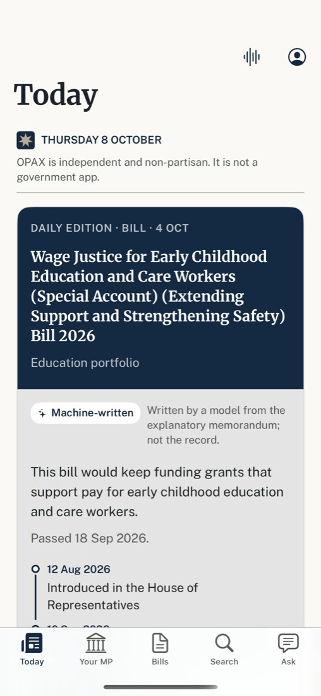
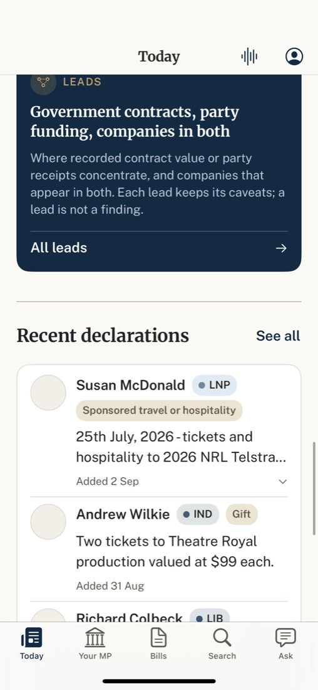

One colour moment, one way into everything else. Fourteen stacked blocks become six; the edition keeps its colour (taken from its subject, not always navy), and the six one-row entry sections, the money-map card and the navy Leads card become one tile grid.
Before · build 15 capture (fixture data), top and further down

1 2 3 4
5 6 7After · wireframe on the proposed tokens
This bill would keep funding grants that support pay for early childhood education and care workers.
Two tickets to Theatre Royal production valued at $99 each.
Independent and non-partisan. Not a government app.